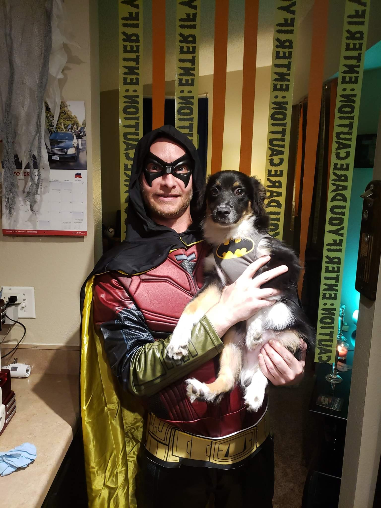

Welcome one and all to the zoo that is the mind of Steve
Welcome, hi, hello. Glad you could make it to the craziest place on earth. My mind is often filled with monkeys,juggling,riding unicycles, but today, no. Today you're in for a treat, because instead of juggling monkey's, you get to learn just what makes me tic....Well sort of. Well let's get into it !
You already know my name is Steven, but you can call me SteveO. I was born in 1978 in Oklahoma City,Oklahoma. I moved to eastern Washington when I was 7 or 6 I don't really remember my age then. where I had lived on top of a mountain, 50 or so miles from the nearest town. I moved to Everett in 1986 then finally moved to Marysville in 1987. I graduated high school in 1997 where then I started college but after 6 months of straight work and school I got sick and had to drop out.
Once I felt better I immediately went to work where I had jobs such as a furniture delivery guy, a construction and industrial parts delivery guy, a shop boy and as a door-to-door vaccuum cleaner salesmen. I sold 12 vaccuums and never saw a penny, had to use my own car and gas to get to customers houses too. One day while out in the middle of knowhere in a run down trailer attempting to sell a 1500 vaccume to poor people my bestfriend called and told me that Waste Management had an opening for another garbage collector. So I quit on the spot, and no I didnt make a sale that day but I did however get a shiny new vaccume cleaner though ! ;)
A couple weeks later I was driving as a garbage man or Sanitary specialist as like to call it. Almost exactly at my 2 year mark of driving with Waste Management one day, while out on my route, my clipboard had slid over to the work side of the truck where I was standing. It locked my steeering wheel in place and before I could throw it outta the way it was too late, I was being pulled into the ditch on the side of the road and rolled the truck on it's side. It was not long after I was once again without a job, and needing to figure something out QUICK ! After day 2 of me being unemployed it happened, Sept.11th2001
A day im sure you remember well. I knew what it was that I needed to do, and That was join the military.
I went to the only open office which was the Navy and signed up. I didn't even tell my wife, I just did it. She mind you was PISSED, but she quickly got over it. While in the military I got to travel to 4 states and 15 different Countrys. In the service my job or rate, as it's called was an Aviation Ordnanceman or AO for short. As an AO I built bombs and missles that got loaded on to the FA-18 super hornet, and as a member of the weapons department I also stood all security gun watches and trained new sailors and old sailors how to shoot and helped with keeping their quals up to par. I was also a member of the fast attack small inflatable rib boat crew where I manned the m60 machine gun. I did see a lot of stuff and got to do a lot of different things while in the military, but that's another story, for another time. Once I was honorably discharged after 8 years of service to this fine, outstanding Country I moved back from sunny San Diego, back here to Washington state in Marysville.
Where I became an aircraft electrician and team lead at the Boeing Company where I worked at until 2018.

My goals are to finally find a career that I can retire at, and at the same time make some damn good money while I'm at it.
Everyone loves animals but Ive got a top 10 favorite animal list that is worth checking out below.
Cats
Dogs
bears
Eagles
Hawks
Seahawks
Panthers
Gorillas
Monkeys
Tigers
Next I will give you a list of my previous work history and education.
Genes Plumbing
Taco Bell
Boston Market
Genes Plumbing( yes again )
Majestic vaccumes
Waste Management
US Navy
Itt Technical Institute - School of Criminal Justice

 A day im sure you remember well. I knew what it was that I needed to do, and That was join the military.
A day im sure you remember well. I knew what it was that I needed to do, and That was join the military.